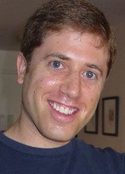
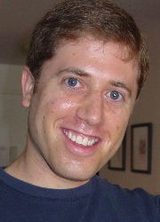
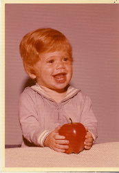
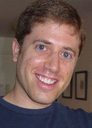
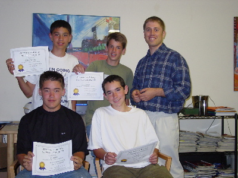

{kind=link}
 

Andrew Begel's Berkeley Home Page |
I'm a seventh year Ph.D. candidate in the Computer Science Division of the Department of Electrical Engineering and Computer Sciences of the University of California, Berkeley.
My email address is abegel@cs.berkeley.edu. This web page resides at http://www.cs.berkeley.edu/~abegel.
I live in the Mission district of San Francisco.
 
That's me! (Darn! I'm handsome at any age.)
(My friends call me Bagel.)
I work with Prof. Susan L. Graham on programming languages and environments. I'm currently working on a few projects.
My officemate, Marat, and I are working on programming language environments. Enabling the document editor to utilize results from the syntactic and semantic analysis of your code can be quite beneficial. Imagine getting little underlines under expressions with type mismatches. Or being able to change the name of a variable... in the correct scope. Or changing the signature of a function and getting a list of other functions that call it that must be fixed to use the new signature. There's plenty of interesting things you can do to help the programmer out. The project is called Harmonia. In the past, people have made systems named Pan and Ensemble.
I'm interested in many different things from distributed and parallel computing to programming languages. I think that semantic analysis is way cool, as is designing domain-specific languages for easier programming. (I recently went to a workshop on GIS and multi-agent modeling at the Santa Fe Institute. There was a really good diagram of the trade-offs in model choice given by Lou Gross (an ecology professor at U Tennessee-Knoxville)). I'm also interested in network-related domain-specific languages. I've worked on a packet filter language designed by Steve McCanne and hopefully, I'll tackle some issues related to instrusion detection using a high-level policy language to manage deployment of packet filters.
I also like computer education. I am intrigued by different mental models of computing and I want to understand how these models change as students learn new programming languages and paradigms.
My first summer here, I worked at Xerox PARC with Mike Spreitzer in the HTTP-NG group. It was lots of fun and we even came up with some nice theory about extensibility and type evolution in persistent object-oriented systems. A paper describing this work has been published in the Workshop on Integrating XML and Distributed Object Technologies at WET-ICE '99..
I used to go to school at MIT. I was in Course VI-3 (that's EECS, Computer Science, for all those not with the program). I really loved MIT. I took plenty of classes, and UROPd in the Epistemology and Learning (now called Lifelong Kindergarten) group with Mitch Resnick at the MIT Media Lab. It was lots of fun. Here's my old home page.
I worked (still work <grin>) on a few different projects. Three major ones are StarLogo, YoYo (nee Bongo, nee Cocoa), and LogoBlocks. StarLogo is a massively parallel Turtle Logo intended for high school kids. It allows them to get involved with creating simulations and models for systems that they see in the world (i.e. ant colonies, traffic jams, n-body problems, etc...). YoYo, my Master's thesis at MIT, is an object-oriented, dynamic language similar to Logo that I built on top of Java. Using YoYo, I created a video game construction kit to enable kids to program their own video games and put them on the web. LogoBlocks, based on my MIT Advanced Undergraduate Project, is a graphical programming environment for programming the Cricket, a tiny computer, powered by a 9 volt battery, that can control two motors and receive information from two sensors. Check it out, it's neat!
In Spring 2000, I helped out my friend Laura Allen by being a workshop leader for the TechGyrl's '99 program. I put together a collection of ideas (that I snagged and rearranged from Gary Stager's Logo page) for Microworlds Logo and Lego Dacta.
I've helped out at several student-oriented and teacher-oriented workshops for StarLogo. The goal was to get the participants to understand complex systems and learn how to build models of such systems by programming them in StarLogo.
| For 13 weeks in Spring 2002, I taught an after-school program to 4 8th grade boys to teach them about complex systems and how to program in StarLogo. For some of the kids it was slow going at first, but by the end, all really understood the programming, and half of them understood complex systems! |  |
Published PapersMichael Toomim, Andrew Begel and Susan L. Graham. Managing Duplicated Code with Linked Editing. In the IEEE Symposium on Visual Languages and Human-Centric Computing, Rome, Italy, September 2004. (VL/HCC 2004) (pdf) Eric Klopfer, Mitchel Resnick, John Maloney, Brian Silverman, Andrea diSessa, Andrew Begel and Chris Hancock. Programming Revisited - The Educational Value of Computer Programming. In International Conference on Learning Sciences. Los Angeles, California, June 2004. Panel. (ICLS 2004) (pdf) Andrew Begel and Susan L. Graham. Language Analysis and Tools for Ambiguous Input Streams. In the Fourth Workshop on Language Descriptions, Tools and Applications, Barcelona, Spain, April 2004. (LDTA 2004) (pdf) Slides: (ppt) (pdf) Andrew Begel, Daniel D. Garcia, and Steven A. Wolfman. Kinesthetic Learning in the Classroom. In the Proceedings of the Technical Symposium on Computer Science Education, 2004. Special Session. (SIGCSE 2004) (pdf) Eric Klopfer and Andrew Begel. StarLogo in the Classroom and Under the Hood. Kybernetes (32) 1/2. January 2003. (pdf) Andrew Begel, Philip Buonadonna, David Culler, and David Gay. An Analysis of VI Architecture Primitives in Support of Parallel and Distributed Communication. Concurrency and Computation: Practice and Experience (14) 1. January 2002. (pdf). Andrew Begel, Steven McCanne, and Susan L. Graham. BPF+: Exploiting Global Data-flow Optimization in a Generalized Packet Filter Architecture. In the Proceedings of SIGCOMM '99. (ps). Slides: (ppt) (html) (ps) Mike Spreitzer and Andrew Begel. More Flexible Data Types. In the Proceedings of The Eighth IEEE International Workshops on Enabling Technologies: Infrastructure for Collaborative Enterprises (WET-ICE'99). (ps) (pdf). |
ThesesAndrew Begel. Bongo, a Kids' Programming Environment for Creating Video Games on the Web. Master's Thesis. Massachusetts Institute of Technology. May 23, 1997. (pdf) (html). Andrew Begel. LogoBlocks: A Graphical Programming Language for Interacting with the World. Advanced Undergraduate Project. Massachuesetts Institute of Technology. May 24, 1996. (pdf) (html). |
Class Project PapersAndrew Begel. Program Commenting by Voice. CS294-1 Software Development Class Project Report. Spring 2002. (pdf) (html) Andrew Begel and Zafrir Kariv. SpeedNav: Document Navigation by Voice. CS294-4 Assistive Technology Class Project Report. Spring 2002 (pdf) (ps) Andrew Begel, David Gay and Philip Buonadonna. Split-C for the New Millennium. CS258 Parallel Computer Architecture Class Project Report. Spring 1999. (pdf) (ppt) Andrew Begel. NinjaScript: A Dataflow Language for Composing Network Services in Ninja. CS264 Compiler and Language Design Class Project Report. Fall 1997. (html) Andrew Begel. A Thread Implementation for Titanium. CS267 Applications of Parallel Computers Class Project Report. Spring 1998. (html) Andrew Begel. BSD Packet Filter Optimizations. CS265 Compiler Optimization and Code Generation Class Project Report. Spring 1998. (ps) (html) Andrew Begel. From the Abstract to the Concrete: A Study of CS61A Students in CS61B. EMST222a Programming and Problem Solving Class Project Report. Spring 1998. (html) (presentation (html)) Andrew Begel, Josh MacDonald and Michael Shilman. PicoThreads for Java. CS262 Advanced Operating Systems Class Project Report. Fall 1997. (pdf) (ps) Andrew Begel. CrystalBoard: A Transparent Shared Whiteboard. CS294-4 CSCW: Computer Supported Cooperative Work Class Project Report. Fall 1997. (html) |
|
VL/HCC 2004 Spoken Language Support for Software Development. Talk given at the Graduate Student Consortium. September 28, 2004. (ppt) Spring 2004 Orientation and Teaching Conference for Graduate Student Instructors. Ran a workshop for new EECS GSIs. August 27, 2004. (html). LDTA 2004. Language Analysis and Tools for Ambiguous Input Streams. Paper Presentation. April 3, 2004. (ppt) (pdf) ICLS 2004 Programming Revisited - The Educational Value of Computer Programming. Panel. June 25, 2004. (ppt) SIGCSE 2004 Kinesthetic Learning in the Classroom. March 5, 2004. (ppt) SIGCSE 2002 Spoken Language Support for Software Development. Talk given at the Doctoral Consortium. February 27, 2002. (ppt) CS 301 Lecture: How to be a Great TA. February 8, 2002. (html) Spring 2002 Orientation and Teaching Conference for Graduate Student Instructors. Ran a workshop for new Quantitative Science GSIs. January 17, 2002. (html). Fall 2001 Orientation and Teaching Conference for Graduate Student Instructors. Ran a workshop for new EECS GSIs. August 24, 2001. (html). CS 301 Lecture: How to Be a Good TA. November 3, 2000. (html). Fall 2000 Orientation and Teaching Conference for Graduate Student Instructors. Ran a workshop for new EECS GSIs. August 25, 2000. (html). CS 301 Lecture: How to Be a Good TA. October 22, 1999. (html). Agent Simulation: Applications, Models and Tools. StarLogo: Building a Modeling Construction Kit for Kids. October 16, 1999. (ppt). SIGCOMM '99. BPF+: Exploiting Global Data-flow Optimization in a Generalized Packet Filter Architecture. September 2, 1999. (ppt) (html) (ps). Santa Fe Institute Workshop on GIS Systems and Modeling. StarLogo: Massive Parallelism for the Masses. March 20-21, 1998. (ppt). |
I'd like to be a computer science professor. Let's call it a cross between programming languages and HCI. I guess some people might call it software engineering. I call it programmer/computer interface research.
This section got too big, so I moved it to its own page.
In Spring 2001, I co-taught CS301: Teaching Techniques for Computer Science, with Dan Garcia. CS301 is a class to teach first-time TAs in the Computer Science Division how to be the greatest TAs they can be. It was truly awesome.
In Spring 2000, I TAd (GSId) CS164, a class called Introduction to Compilers. It's for junior/senior-level Berkeley undergrads. I hope y'all liked it.
In Fall 1997, I TAd CS61a, the intro CS course at Berkeley. It's taught by Brian Harvey. CS61a is a Berkeley port of 6.001, which I took at MIT 5 years ago. It uses the Scheme programming language to introduce students to the zen of programming. After this course, learning any other programming language is cake.
Well, I never said my school life was that interesting. I was in a fraternity at MIT called Alpha Epsilon Pi.
I had a lot of friends there who are out here in sunny California! They're now working at Cisco, DoubleClick, Yahoo, going to school at Stanford, UCSF and Cal (Go Bears!), or just bumming around doing nothing. :P
Nu? So, when there's more, I'll let you know.
Andrew Begel abegel@cs.berkeley.edu
Last modified: April 6, 2004
{kind=link}